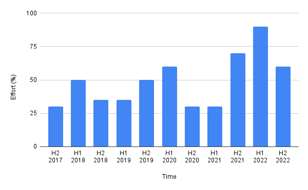
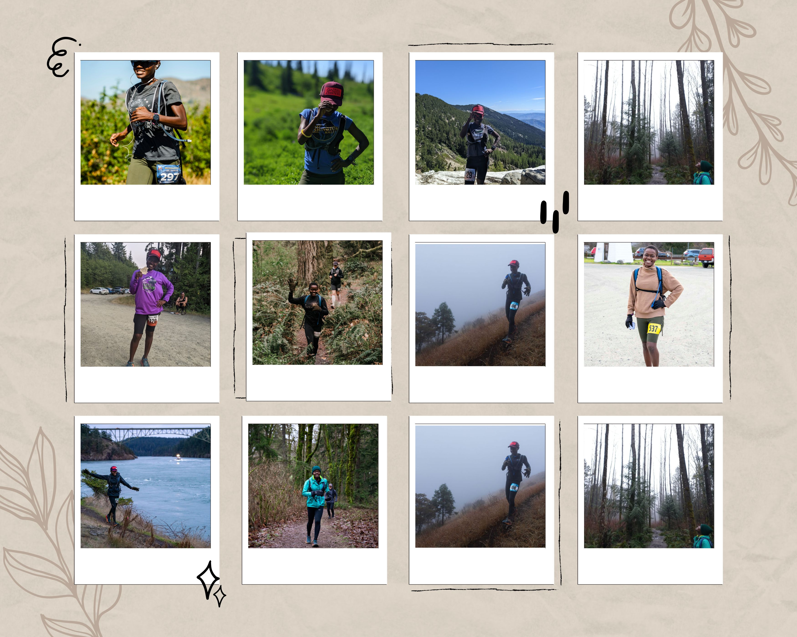
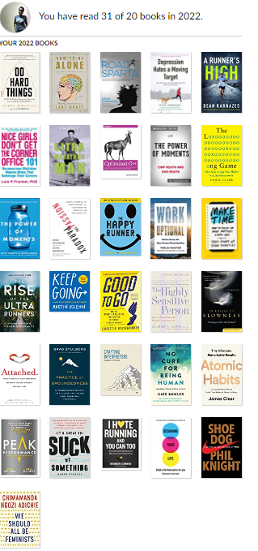

Tis the season so lets talk about New Years;

Photo by Cristian Escobar on Unsplash
I love the freshness and enthusiasism that comes with the calendar flip. Clouded by December merryments, we naively give ourselves permission to ignore logic and dream audaciously. I love the universality of it all; we may not celebrate the same deities but we atleast recognize the dawning of a new year. As a result, we get to collectively participate in the same ritual of looking back and plotting forward; speaking the same language of gratitude and resolutions. I love these rituals; its a pity that we only do them once a year. It should be normal to do New Years rituals any day, any time of the year. For me, that time was 3.5 years ago; it felt appropiate to start afresh after yet another international move. So I set resolutions for the next 10 years and set up a time capsule that opens every December; just in time for the rituals. I know its odd but the more I learn about others practising similar rituals, the more natural it feels.
I love everything about New Years except perhaps for the way we traditionally do it. By tradition I mean making resolutions in January, scrambling them into 52 weeks then facing disappointment come evaluation time. It feels artificial because life can’t be time-boxed into 52 weeks, a year is too short to see through most things of substance; historical breakthroughs spanned across years even decades, even what appears to be ‘Eureka’ moments were preceded years of marination. While I don’t like the New Years traditions, annual reflections are important. Here’s why:
- The Zoom out factor
Its really hard to see growth from day to day; trees, flowers, babies look exactly the same as they did yesterday. Zoom out a month, you might see progress; zoom out a year and its gets obvious, growth happened. I recently ran races that I also ran last year. I had no expectations, just ran at my regular “meditative” pace. Even though it didn’t feel harder, I was definitely faster, by minutes! Although they weren’t evident, adaptations were definitely happening.
- The little details
I’m not particularly fond of taking photos of myself. Blame that on the culture I grew up in, body dysmorphia, or simply preference; I’d rather take pictures of trees and lakes than selfies. I recently asked a friend who is the complete opposite about why they do it, their responce gave me a lot to think about. “20 years from now, how do you want to remember the life you’re living now?” Zooming out, big picture stuff is important but so are the little details. Its the details like the smell of last winter’s detergent on your winter coat or journal entries that effectively teleport you back in time.
Photo by Jan Kahánek on Unsplash
- Patterns
Patterns become evident when you zoom out. I observed interesting patterns when I did some reflections of my own. For instance; I go on racing overdrive to cope with major life events. This graph tells it all; fundamental changes happened in those peaks; a move, death, breakup or some combination. Racing is my way of reclaiming control (or least the illusion of it); is it rational? Nope. Does it help? Definitely!

Another trend that became apparent is my predisposition for self-destruction. Its hard for me to stop when I know I can go further. I won’t get into details of why its not sustainable for me but I stuck with a vegetarian diet until I literally ran out of blood, I challenged myself to stand 18 hours a day (while also running) until my knees couldn’t bear it, I squeezed in so much running that Arthritis made an early appearance. What can I say? I’m intense. I can push myself to my absolute limits and while that’s generally a good thing I have to be picky about the limits I choose to push.- Sanity check
In the summer of 1896, a drunk man fell into a whale carcass along the southeast coast of Australia. Hours later he emerged definetly gross but somehow sober and cured of rheumatism. 3 years later, “whale bathing” for 30 hours became one of the recommended ways of curing rheumatism. As someone with rheumatism, I’m glad we now know better now. We pick up a lot of things because they make sense at the time; careers, friends, whale bathing you name it. Its in our best interest to sanity check once in a while less we end up in a whale’s carcass for no good reason. New Years is a good time to question whether our commitments still serve their purpose.
Now that we’ve established that reflections are good, lets dive into my 2022.
- Running
Its hard to talk about 2022 without mentioning running . It was the year I ran my first ultra and probably the most ultras I’ll ever run in one year. it was the year I spent almost every weekend frolicking in the woods. I started this year with a question, what is the furthest I can go? I think the answer lies somewhere in 50 miles in a day and 10 ultras, 2600 miles plus hundreds of cross-training hours over a year. I started 6 of those ultras almost certain I wouldn’t finish, mostly due to ruts and flares; I finished all but one. That’s how I know I can do anything I set my mind to. Even though my body can’t handle extreme shenanigans anymore; am proud of every mile I ran, all the shuffles and personal records, not only made me marginally faster but also taught me a lot about myself and for that I’m grateful. As I seek other ways to challenge myself, I’ll carry this years lessons with me.

- Reading
I didn’t have grand plans for neither cycling nor reading; just cross training between runs for cycling and a soft goal 20 annual books at best effort. Combining the two resulted in an activity I actually looked forward to; ebook on indoor bike and audiobook riding outside. My cadence may have had room for improvement but reading was much faster and delightful when moving.

No suprise that I only read technical books and non-fiction; If that’s also your jam, I highly recommend Dean Karnazes, Steve Magness and Brad Stulberg; I’m at the point where I’ll read whatever they write.
- Writing
Nothing to say here except thanks for reading this blog. Thanks for keeping me accountable and bearing with me as I find my voice. I always imagine that I’m writing into the void so it warms my heart when I write something that connects with you. Keep the feedback coming through whichever channel you stumbled upon my blog and if you don’t wanna miss a post you can now Subscribe!. Story telling aside, I have a couple of technical writing projects on track to be released next year. I know I said the same thing last year but I’m confident about 2023 as the immigration gods have spoken (IYKYK), Stay tuned!
- Work
This section is brief not because I have nothing to say but due to limitations on how much I can disclose publicly. I really showed up this year and have all the receipts to prove it. I owe it all to mentors, sponsors and peers who supported me along the way, books and articles also helped. Although I don’t agree with a lot of tips from the Nice Girls don’t get the corner office, here are a few that helped me manage work better without having to put in more hours.
- People who tend to get ahead know how to balance the tactical with the strategic. You can add value by not obediently following instructions but rather by thinking and planning – which is what you want to be known for.
- It’s a fallacy that you have to give up your life to have a successful career.
- Women overcompensate by striving for perfection
-
Miscellaneous
This is the bucket that holds everything that wasn’t a priority but I somehow made time for.
- Learnt how to make jewelry with Enamel. It was a lot of fun.
- Made even more jewellery.
- Developed some friendships, dropped others; evolution as we know it.
- Engaged in the trail community through various channels like Trail Sisters, becoming an orca running ambassador, Podcasts, running and volunteering at races. Words can not express how rewarding that was.
- Played some piano tunes.
Now it wouldn’t be a complete review if I didn’t share the lessons I learnt. Here they are, in no particular order:
- The real prosperity currency is energy not time. (Considering how much I think about this, I’ll write a post on it soon)
- If it’s important make it boring, routinize it; applies to exercise, finances etc
- Self-improvement is meaningless if you miss out on life chasing streaks and arbitrary goals.
- Nothing of importance is written in one sitting, breaks are important.
- A little bit every day is better than piling it all on one day; applies to writing, piano, running etc
- Its better to do one thing really well than 1000 things averagely.
- One thing at a time.
- Its okay and sometimes more efficient to be spontaneous.
- You don’t have to be in control all the time and that’s a good thing.
- Interests change overtime and that’s okay. We are afterall dynamic creatures.
- You add the most value by responding rather than reacting so take your time, think, respond.
- All deadlines (except actual death) are artificial.
- Challenges are great but it doesn’t always have to be hard.
That’s a wrap for me. Whether or not 2022 was a good year is debatable; personally it was one for learning and growth. As for 2023, I still have homework from my 10 year plan and major adjustments to make; those could fill an entire year. Whatever I end up doing, I hope it will lead to more good days.
Photo by Andreas Dress on Unsplash
Irrespective of the New Years rituals you practice, I hope you take the time to reflect and dream BIG. Sure, nothing changes when the clock strikes midnight but if that is what it takes to tap into your full potential then so be it. Speak your wildest dreams to existence, you may not get there next year but you’ll well on your way. Happy Holidays!